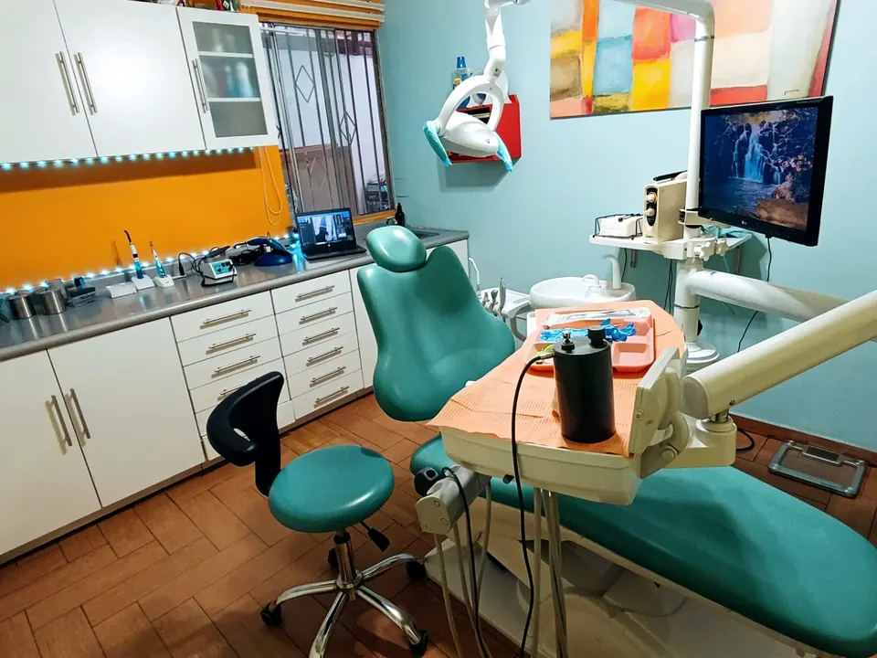
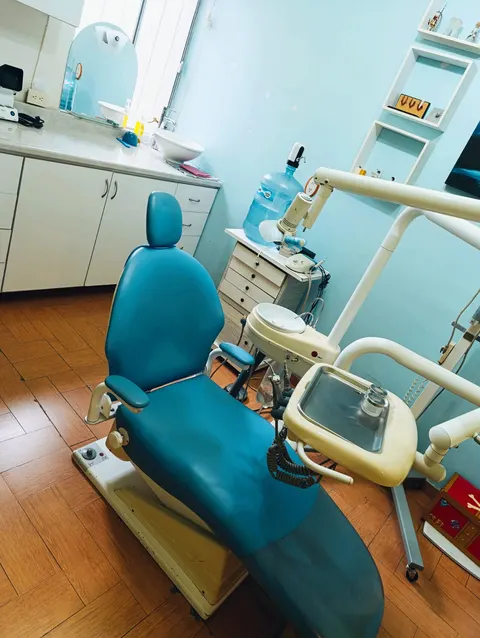
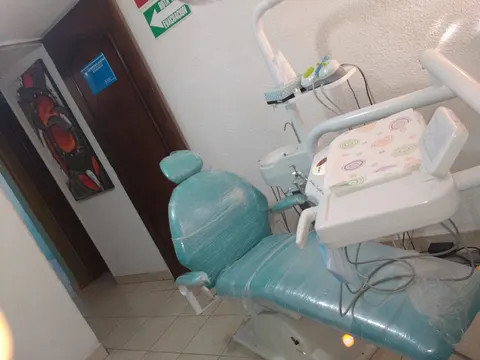
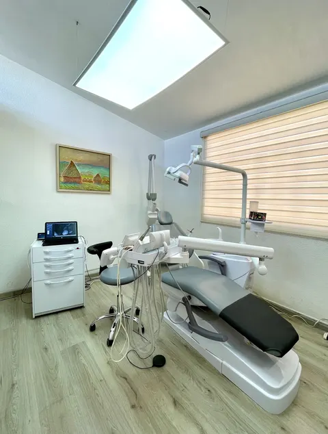

Montoya 140 · Ojocaliente5.0 en Google · 20 opiniones
Tu sonrisa,bien alineada.
Ortodoncia y estética dental con el Dr. Ilich.
Lo que tearreglamos aquí.
-

PreguntarOrtodoncia
Brackets y alineación con el Dr. Ilich.
Pregunta el precio -

PreguntarEstética dental
Una sonrisa pareja y bonita.
Pregunta el precio -

PreguntarValoración
Tu primera revisión para saber qué sigue.
Pregunta el precio
"Los doctores son muy profesionales y los costos muy accesibles." Andrea Loera, Google
Tu sonrisa hoy
Marca lo quequieres cambiar.
Elige qué te molesta y toca tus dientes. Le llega al Dr. Ilich ya armado.
5.0
20 opiniones en Google
Lo dicensus pacientes.
"Excelente servicio! Me realicé mi tratamiento de ortodoncia con el Dr. Ilich! De mis mejores inversiones! Recomendados al 100%"
"Quedé muy satisfecha con los resultados de mi segundo tratamiento ortodóntico."
"Siempre ha habido un excelente trato y excelentes resultados en mis tratamientos. En mi caso fue tratamiento de ortodoncia."
"Mi experiencia al llevar mi tratamiento de ortodoncia en Dntary Clinic fue muy buena en todos los aspectos."
"Doctores muy bien capacitados y muy buena atención. Sin duda, la mejor opción respecto calidad vs precio."
"Estoy muy contenta con mi resultado, un gran ortodoncista el Sr Ilich, lo recomiendo mucho."
"Los doctores son muy profesionales y los costos muy accesibles, los recomiendo 100%."
"Excelente lugar, muy cuidadosos y limpios."
Del primer holaa tu sonrisa.
Valoración
Revisamos tus dientes y te decimos qué sigue.
Tu tratamiento
Empieza tu ortodoncia con el Dr. Ilich.
Tus revisiones
Vienes a tus citas y tus dientes se van acomodando.
Ven aOjocaliente.
Montoya 140, Ojocaliente I, 20196 Aguascalientes, Ags.
- Lunes11 a.m. a 9 p.m.
- Martes11 a.m. a 9 p.m.
- Miércoles11 a.m. a 9 p.m.
- Jueves11 a.m. a 9 p.m.
- Viernes11 a.m. a 9 p.m.
- Sábado11 a.m. a 3 p.m.
- DomingoCerrado
Atendemos solo pacientes particulares.
Todo listopara completar.
- Precios de cada tratamiento
- Fotos del Dr. Ilich y de su equipo
- Antes y después, con permiso del paciente
- Tu logo y tu Instagram
Pásanoslo por el mismo chat donde te llegó esta muestra.